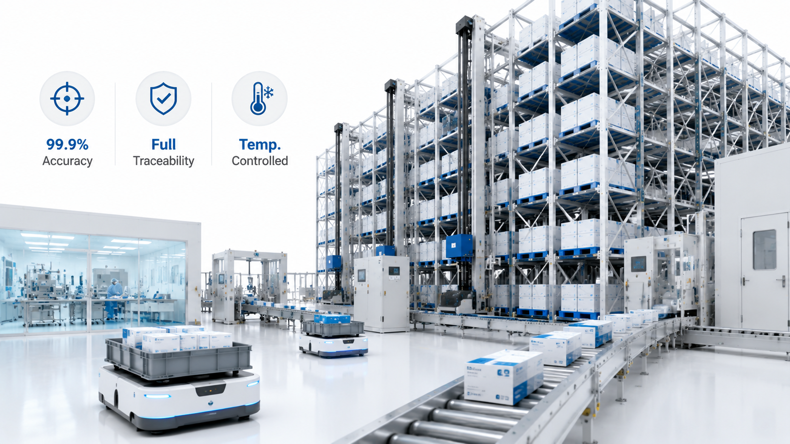

How Much Does a Chemical Drum ASRS Warehouse Cost ?

Summary
Chemical drum storage warehouses require specialized heavy-duty ASRS systems due to strict safety regulations, high load requirements, and hazardous material handling standards.
In 2026, the cost of a chemical drum ASRS warehouse using stacker crane technology typically ranges from $500,000 to $5,000,000, depending on automation level, storage capacity, safety requirements, and system complexity.
This article provides a full breakdown of CAPEX structure, system pricing logic, safety system costs, and ROI considerations for industrial decision-makers.
Technology
- A chemical drum ASRS warehouse typically integrates:
- Heavy-duty stacker crane ASRS system
- Reinforced chemical drum pallet racks
- Explosion-proof warehouse safety system
- WMS (Warehouse Management System)
- WCS (Warehouse Control System)
- SCADA real-time monitoring system
- Load weight detection sensors
- Industrial conveyor transfer system
- Safety isolation zones
- Automated inbound & outbound handling system
Challenge
Chemical drum warehouses face significantly higher cost complexity compared to standard logistics systems due to:
Heavy load handling requirements (drums often 200–1000kg per pallet)
Strict safety compliance regulations
Explosion-proof infrastructure requirements
Specialized storage rack reinforcement
Higher system redundancy requirements
Risk mitigation for hazardous materials
These factors make cost estimation more complex than standard ASRS systems.
Solution
A structured cost model for chemical drum ASRS must include four key layers:
Hardware (stacker crane + racking system)
Automation software (WMS/WCS/SCADA)
Safety engineering systems
Installation & commissioning services
This layered approach ensures accurate budgeting and prevents hidden cost underestimation.
Workflow & Layout
A chemical drum ASRS warehouse typically follows this automated workflow:
Step 1: Inbound Receiving
Chemical drums are:
Scanned and registered into WMS
Checked for safety classification
Assigned storage zones
Step 2: Automated Transfer
Drums are moved to ASRS input stations via conveyor or lifting systems.
Step 3: Stacker Crane Storage
Stacker crane performs:
Heavy-load lifting
Vertical storage into reinforced racks
Precise positioning control
Step 4: High-Density Storage Management
System optimizes:
Chemical compatibility grouping
Safety separation distances
Vertical space utilization
Step 5: Automated Retrieval
Stacker crane retrieves required pallets under WMS/WCS control.
Step 6: Outbound Dispatch
Drums are transported to shipping or processing zones.
Results & ROI
- Operational Performance:
- Fully automated heavy-load handling
- Stable 24/7 operation capability
- Reduced forklift dependency
- Efficiency Improvements:
- 200–400% warehouse efficiency improvement
- Higher storage density utilization
- Faster inbound/outbound cycles
- Safety Improvements:
- Reduced human exposure to hazardous chemicals
- Lower accident risk vs manual forklifts
- Improved compliance with industrial safety standards
- ROI Timeline:
- Typical payback period:
- 👉 18–36 months depending on utilization rate and labor cost level
Equipment List
- Core Hardware:
- Heavy-duty stacker crane system
- Chemical drum reinforced pallet racks
- Industrial conveyor system
- Safety isolation structures
- Load stabilization platforms
- Software Systems:
- WMS warehouse management system
- WCS real-time control system
- SCADA monitoring platform
- Inventory tracking system
- Safety Systems:
- Explosion-proof electrical system
- Load weight monitoring sensors
- Anti-collision detection system
- Emergency shutdown system
- Hazard zone access control
Project Overview / Opening
Chemical drum warehouses are among the most demanding industrial storage environments.
Unlike standard warehouses, they require:
Extreme load handling capability
High-level safety engineering
Strict compliance with hazardous material regulations
Stable and predictable automation performance
A stacker crane-based ASRS system is currently the most reliable solution for this industry.
Key Points
- 1️⃣ Heavy-Duty ASRS Cost Breakdown
- Total system cost typically includes:
- 40–60%: hardware (cranes + racks)
- 20–30%: software systems
- 10–20%: installation & integration
- 5–15%: safety engineering systems
- 2️⃣ Stacker Crane System Pricing Logic
- Pricing depends on:
- Warehouse height
- Load capacity (chemical drum weight)
- Aisle quantity
- Storage density requirements
- Higher load = higher structural cost.
- 3️⃣ CAPEX Range ($500K–$5M)
- Small System:
- $500K–$1M
- Limited capacity, single aisle
- Medium System:
- $1M–$3M
- Multi-aisle, moderate automation
- Large System:
- $3M–$5M+
- High throughput, multi-zone industrial warehouse
- 4️⃣ Safety System Cost vs Automation Cost
- Safety systems can account for:
- 👉 10–25% of total investment
- Because chemical storage requires:
- Explosion-proof design
- Monitoring systems
- Emergency shutdown systems
- 5️⃣ Why Automation Reduces Long-Term Cost
- Although CAPEX is high, automation reduces:
- Labor cost
- Accident risk cost
- Operational inefficiency losses
- Downtime risk
- 6️⃣ Key Value Driver
- The real value is not storage—it is:
- 👉 risk reduction + operational stability + scalability
Implementation / Workflow
Phase 1: Requirement Analysis (2–3 weeks)
Chemical classification review
Load and capacity analysis
Safety compliance requirements
Phase 2: System Design (2–4 weeks)
Warehouse layout planning
Crane configuration design
Safety zoning planning
Phase 3: Engineering Integration (4–8 weeks)
System manufacturing
Software integration (WMS/WCS/SCADA)
Safety system integration
Phase 4: Installation (2–4 weeks)
Equipment installation
System calibration
Safety validation
Phase 5: Commissioning (1–2 weeks)
Load testing
Operational simulation
Final acceptance
Customer Value / Results
Operational Value:
Fully automated chemical handling
Stable warehouse operation
Reduced human dependency
Safety Value:
Lower accident risk
Compliance with hazardous regulations
Controlled storage environment
Financial Value:
Predictable ROI (18–36 months)
Lower long-term labor cost
Reduced operational losses
Conclusion / Next Step
A chemical drum ASRS warehouse is not a simple logistics upgrade—it is a high-risk industrial infrastructure transformation.
The investment range of $500K–$5M depends on:
✓ Storage capacity
✓ Safety requirements
✓ Automation depth
✓ System complexity
However, the long-term value lies in:
Safety improvement
Operational stability
Scalability for future growth
If you are evaluating a chemical or heavy-duty ASRS project, we can help you build a detailed cost model, design the system architecture, and estimate ROI based on your real operational conditions.
SEO Title
How Much Does a Chemical Drum ASRS Warehouse Cost ?
SEO Description
Chemical drum storage warehouses require specialized heavy-duty ASRS systems due to strict safety regulations, high load requirements, and hazardous material handling standards.
In 2026, the cost of a chemical drum ASRS warehouse using stacker crane technology typically ranges from $500,000 to $5,000,000, depending on automation level, storage capacity, safety requirements, and system complexity.
This article provides a full breakdown of CAPEX structure, system pricing logic, safety system costs, and ROI considerations for industrial decision-makers.
Related Blog
Start with Your Business Challenge
Tell us about your warehouse, factory, or production requirements. We'll help you explore practical automation solutions and relevant project references.